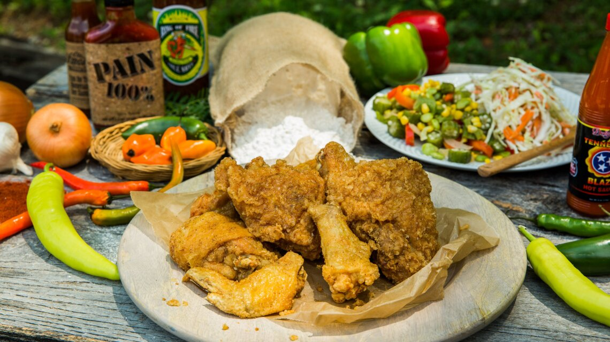

Dollywood's Famous Fried Chicken

Description
A scrumptious favorite from Dolly Parton's Dollywood, this delicious dish is sure to please every family. Following a recipe honed over generations, you can enjoy the flavors of the Smokey Mountains in the convenience of your own home.
Ingredients
- 5 lbs. AP Flour
- 1⁄2 cup Salt
- 3 T Pepper
- 3 T Garlic (granulated)
- 2 T Onion (granulated)
- 2 T Paprika
- 1 T Cayenne
- Chicken Broken down into 8 pieces
Directions
- Turn fryer up to 350 degrees Farenheit.
- Combine all dry ingredients using a whisk. Rinse chicken in ice cold water, drain and add to the flour mixture.
- Stir until chicken is coated completely, then add to the 350 degree fryer.
- Cook for 12-15 minutes or until the internal temp of the chicken reaches 165 degrees.